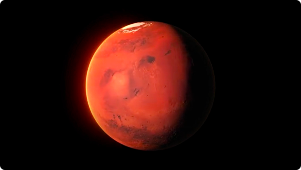
BRAND SYSTEM × ROBOTICS × COMMUNICATION
Team Inferno
Redesigning the identity of a robotics team without losing the engineering behind it.
TL;DR
Team Inferno is DTU's robotics team competing internationally in rover challenges.
The redesign focused on creating a more consistent visual language across social media, recruitment, event communication, presentations, campaigns, and team-facing material.
I worked across brand identity, visual communication, campaign design, motion content, and digital communication.
Background
A robotics team has two stories to tell.
One is technical: motors, sensors, autonomy, fabrication, software.
The other is human: people, competition, ambition, collaboration, and culture.
The existing communication didn't always connect these two worlds.
Problem
How do you make engineering look as ambitious as it actually is?
The team needed a visual system capable of communicating complex technical work quickly while still feeling energetic enough for recruitment, social media, and competitions.
Process
Building the system
-
Moving beyond individual posts
Instead of treating every Instagram post or presentation as an isolated design, we developed a more consistent visual language.
-
Engineering as visual material
The rover, CAD, components, technical drawings, data, and fabrication process became part of the communication itself.
Rather than hiding the engineering behind polished graphics, the design made the engineering visible.
-
Designing for different audiences
The same system had to work for:
Recruitment → Sponsors → Competitions → Students → General audience
Each required a different level of technical detail while still belonging to the same identity.
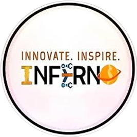
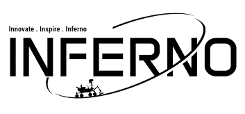
Final System
Team Inferno
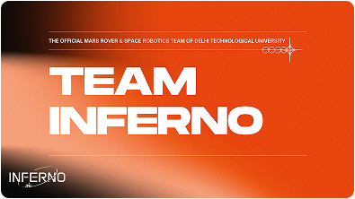
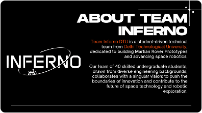
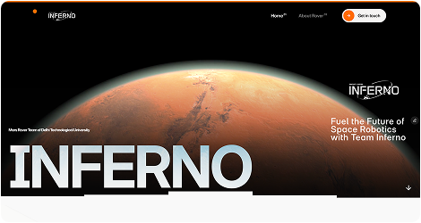
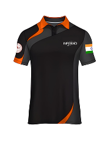
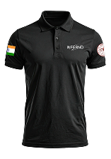
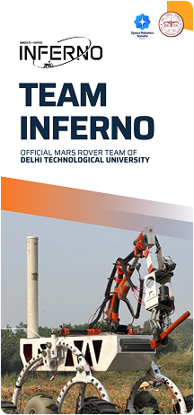
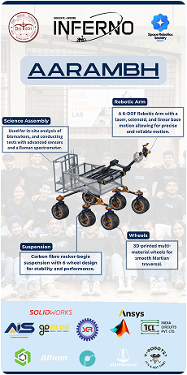
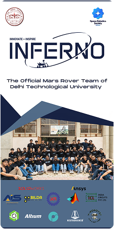
Reflections
A team identity isn't just branding.
Working around a multidisciplinary robotics team changed how I think about visual systems.
The identity has to work for engineers, designers, sponsors, students, judges, and audiences, often within the same week.
That makes consistency a systems problem, not just a visual one.
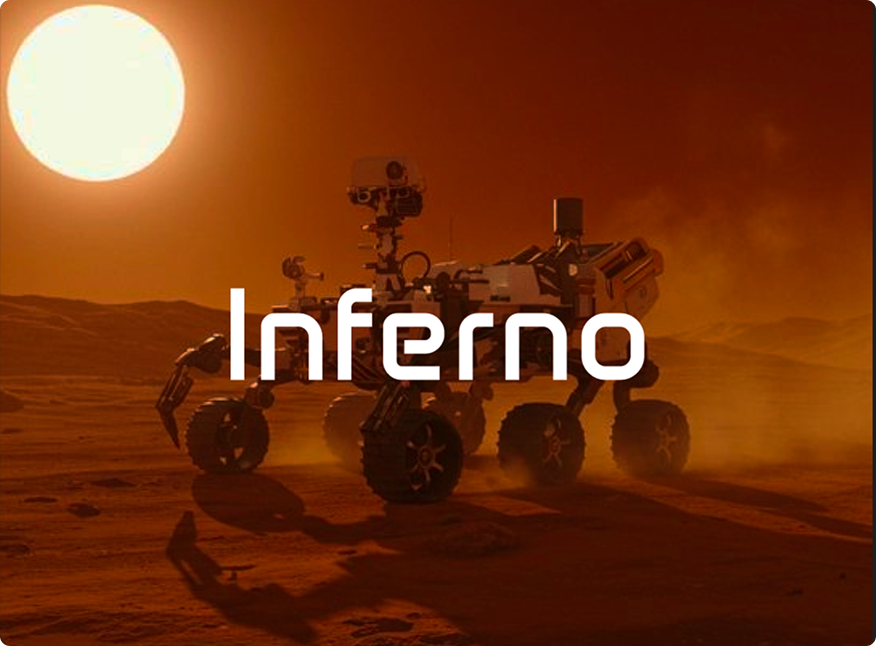